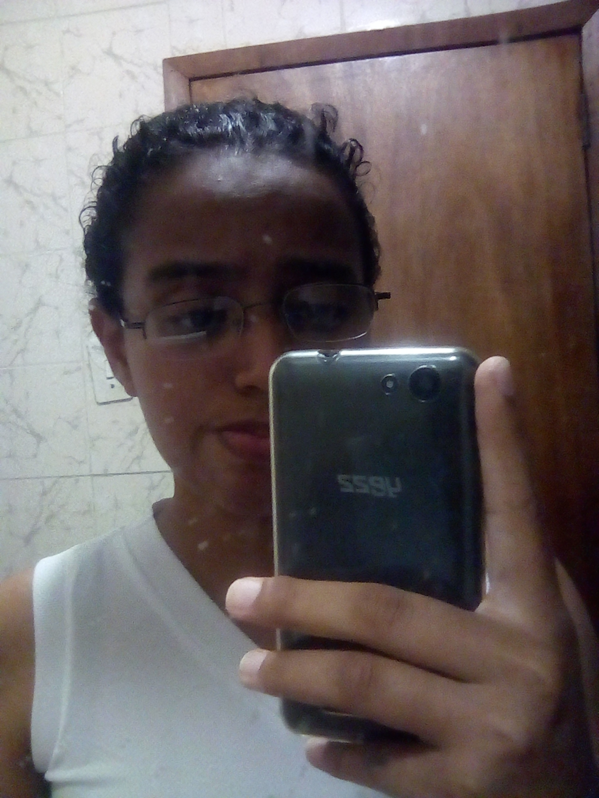

Edad: 20 años.
Nacimiento: 7 de Junio de 1999, Caraballeda, Vargas Venezuela.
Direccion: Colina Manuelita Saenz, calle Rivas, casa 26, prolongación Soublette,
Catia La Mar, Estado La Guaira.
Celular: 0412-3580021, 0414-2100864
Correo: maribarriosluna@gmail.com
Ocupación: Estudiante.

ESTUDIOS EN PROCESOS
Universidad Experimental Maritima del Caribe (UMC)Cursando Septimo Semestre de la Carrera Ingenieria Informaticas
ESTUDIOS CONCLUIDOS
Colegio San Jose de Catia la MarEducación Basica.
Bachiller
CUALIDADES
- Adaptación a diferentes ambientes.
- Empatía.
- Responsabilidad.
- Compromiso e implicación.
- Capacidad de comunicación.
CURSOS
- Curso Japonés, básico.
- Redes sociales, Congreso de Periodismo Cultural 2017
- Fotografia, Congreso de Periodismo Cultural 2017